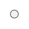

Главная → Сегментная точка
Точка (сегментная точка) – это элемент кругового интерфейса, представленный в виде круга.
SegmentDot - вспомогательный класс библиотеки круговых интерфейсов для реализации сегментного массива точек.

Рис. 1 - Точка
Для создания объекта типа SegmentDot необходимо подключить следующие скрипты:
Для создания объекта в функцию-конструктор передаются основные параметры:
id - идентификатор точки в виде текстовой строки.
context - контекст типа CanvasRenderingContext2D для отрисовки точки.
cx - координата X центра точки.
cy - координата Y центра точки.
r - радиус точки.
Примеры использования различных свойств и методов объекта.
gradient - градиент заливки круга типа SegmentGradient.
Допустимые значения направления для линейного градиента:
"to-left" - справа налево.
"to-right" - слева направо.
"to-bottom" - сверху вниз.
"to-top" - снизу вверх.Допустимые значения направления для радиального градиента:
"from-center" - из центра.
"to-center" - к центру.background - цвет заливки круга (применяется, если не задан градиент заливки).
border_width - толщина окружности.
border_color - цвет окружности.
visible - видимость. Значение true обеспечивает видимость объекта.
in_progress - в процессе. Флаг принимает значение true в процессе анимации.
calc() - выполняет основные вычисления формы и внешнего вида точки.
draw() - функция отрисовки точки.
instanceCopy() - создание независимой копии объекта.
Анимация точки - это различные изменения формы, положения или стиля оформления точки со временем.
Основные параметры анимации:
duration - длительность анимации. Задается в секундах.
delay - задержка перед началом анимации. Задается в секундах.
direction - направление анимации. Набор допустимых значений зависит от вида анимации.
speed - скорость анимации. Едининцы измерения зависят от вида анимации.
appear(direction, duration, delay) - появление точки за счет постепенного изменения формы.
Допустимые значения параметра direction для метода анимации появления:
"from-center" - из центра.disappear(direction, duration, delay) - Исчезание точки за счет постепенного изменения формы.
Допустимые значения параметра direction для метода анимации исчезания:
"to-center" - к центру.fadeIn(duration, delay) - постепенное появление точки за счет изменения прозрачности.
fadeOut(duration, delay) - постепенное исчезание точки за счет изменения прозрачности.
События, запускаемые объектом SegmentDot, реализованы с помощью CustomEvent.
В поле detail.dot передается ссылка на сам объект.
segment-dot-changed - точка изменена. Событие запускается каждый раз, когда выполняется метод calc().
segment-dot-appeared - точка появилась.
segment-dot-disappeared - точка исчезла.
segment-dot-faded_in - точка появилась методом выцветания.
segment-dot-faded_out - точка исчезла методом выцветания.
Главная → Сегментная точка